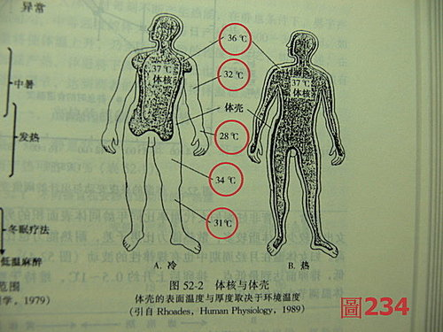
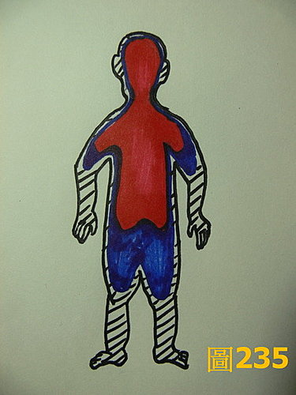
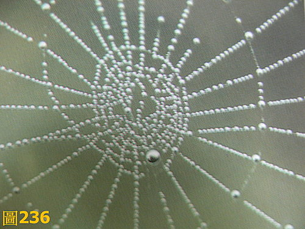

症狀學 2：內傷發熱
作者：陳建元
定義、說明：
這邊依中醫傳統的分類方式，把發熱分為兩大類，一類是「外感發熱」，另一類是「內傷發熱」。「外感發熱」是指外受六淫邪氣、濕熱瘟毒瘟疫等因素所導致的發熱，外候（證）通常呈現病勢來得急、病程短、發熱重、常伴脈浮、頭痛、惡寒、身體痠痛，咳嗽、鼻涕、上呼吸道感染等表症，可有6病傳變或衛氣營血傳變的現象。「內傷發熱」是指內傷為病因所導致的發熱，是因五臟虛損不足、情志失調、勞倦過度、或痰濕瘀血的鬱滯化火、或內傷雜病的局部感染、或是外感後期的正虛邪戀所導致，外候（證）呈現病勢來得緩、病程長或反覆、發熱輕、一般不伴表症，容易伴有乏力、懶言、不思飲食、潮熱、五心煩熱、神倦等相關臟腑虛損的表現。外感發熱一般熱勢較高，內傷發熱一般熱勢較低，但都不是絕對。外感發熱與內傷發熱在病機上面可以互相聯繫，也可互相轉化、互相兼夾，所以有時會互相重疊，也無法截然劃分開來。本條宜與症狀學 1：外感發熱互參。
本條講「內傷發熱」。
四診九大合參分辨不同的病由機轉來治療：
雖然都是內傷發熱，但是發病的原因可以不一樣，所以要依照不同的病機來治療，這些病機可以單一發病，也可以複合為病，下列為常見的機轉種類。
1. 實火發熱：→→→各部臟腑的實火可發熱，脈象見洪實數大滑，氣熱、血熱皆可發熱，治依各部脈的氣熱、血熱來下藥。外候（證）可見面紅耳赤、口乾舌燥。本證一般偏實症。若脈呈現洪實大滑而重按無力，則是實中夾虛症，譬如有時中暑時，可見到熱盛而津氣虛的白虎加人參湯之類。
2. 鬱火發熱：→→→各部臟腑的鬱火可發熱，脈象見沉弦數於第4～5層，鬱火發之，治以各部脈的理氣藥為主，清熱藥為輔。本證一般偏實症。
3. 濕火發熱：→→→各部臟腑的濕火可發熱，脈象見沉緩數於第4～5層，治以各部脈的去濕藥為主，清熱藥為輔。外候（證）可見舌黃白膩苔。本證一般偏實症。若是兼夾石淋或是膽結石等結石症狀者，再加化石草、金錢草之類。
4. 毒火發熱：→→→各部臟腑的毒火可發熱，脈象見黏脈，治以各部脈的清熱解毒藥藥為主，清熱藥為輔。本證一般偏實症。
5. 諸臟腑的陰陽氣血虛損（虛火發熱、陰火發熱）：→→→脈象見沉虛、或浮虛、或浮細數、或沉弱無力，本證一般偏虛症，一般熱勢較緩。各部臟腑的氣、血、陰、陽不足皆可發熱。外候（證）可見低燒纏綿，五心煩熱（體溫實際上略升高或不升高，伴隨或手或足的發熱、心中煩熱）。依脈象下補藥把各部脈的氣、血、陰、陽等虛損補足，並佐清各部脈的虛火，則虛熱低燒可退。即甘溫退熱、養血退 熱、補陰退熱、補陽退熱是也。
6. 外感病正虛邪戀：→→→諸外感病的後期，若患者體力不足，往往外邪逗留，成為正虛邪戀之勢，故呈現低燒或燒退復來，脈象見虛實相夾的現象，或浮緊而無力，或浮虛帶澀，外候（證）見體虛無力、說話無力、面色恍白。參考上條的虛火發熱和176條的外感發熱，衡量正邪雙方的比例而攻補斟酌並用之。
7. 內外瘡（癰）發熱：→→→ 這邊指的內外瘡（癰）發熱，不是單純指現代西醫中膿腫的概念，在古代中，內外瘡（癰）的概念比較廣，遇到發熱，但上呼吸道症狀不明顯，外感症狀不明顯，但外候（證）卻發現有固定的局部症狀或疼痛，局部表現突出而明顯，或某些特定疾病的特殊見證很明顯，脈象見在相對的部脈上，會發現黏數大實滑、細澀數等異常脈象，古代即以內外瘡癰發熱的概念來醫。即今日的內臟膿腫、或急性局部灶性之感染，譬如中耳炎、急性腎盂腎炎、膽囊炎、膽結石、膽道感染‥‥‥，皮膚局部嚴重感染等所導致的發熱，都可以算在內。
8. 瘀血發熱：→→→脈象見弦澀數或伏澀數或洪實澀數，外候（證）見有固定的痛處，或有一個發生的病史過程，譬如球棒重擊頭部後導致昏迷發熱、腦血管中風意外、婦女在經期、流產、分娩、宮內 手術等嚴重感染的急性盆腔炎（即仲景的熱入血室、血熱互結），這類的病機，有兼夾一個氣滯血瘀的成分在內，單純只用一個清熱解毒、清氣熱、清血熱藥的方法來治療行不通。治以各種理氣活血藥之類＋清熱解毒藥、清氣熱、清血熱藥之類＋攻下藥之類。
9. 癌腫發熱：→→→脈象見各種異樣脈（如虛脈、澀脈、洪滑澀脈、弱散脈、促結脈……）中夾雜著癌脈。腫瘤發熱的因素很多，原因不一，癌腫或白血病之類本身所釋放出的因子或是脫落的壞死因子，本身就能發熱（呈現癌脈為主），而併發的周圍炎症感染也會發熱（一般會暫時轉成洪實數之類的脈象），而癌毒一直消耗正氣，導致如上述第5條的諸般正虛時，又會產生虛火發熱（諸虛損脈中夾癌脈），而在醫療的過程中，總會遇到幾次外感，故又會有外感發熱（見部落格症狀學 1：外感發熱）（浮脈之類中又夾著癌脈）。我統計所見過的癌腫發熱，主要是這四種原因，或是互相兼夾，或是輪流而來，實火、濕火、毒火、痰火、虛火、……，各種火都有可能。要治療癌腫發熱，一定要對脈證熟悉才有本錢，要不然很難應付，因為你會分不清楚到底現在是哪一種。在西醫病床所見，常見癌腫者又感受外感而導致發熱，卻往往被醫師當成是癌腫本身的發熱而不受重視，結果導致外感傳變，又引發其他嚴重併發症而駕鶴西歸者不在少數。
臨床常見病因補充：
10.急性肺膿腫發熱：→→→代表性脈像是六脈浮中沉實大滑弦數，外候（證）見起病驟急、寒戰、高熱、胸痛、氣急，吐大量膿痰或膿血樣痰，是急性肺膿腫。《金匱》：「寸口脈數，其人咳。若口中辟辟燥，咳即胸中隱隱痛，脈反滑數，此為肺癰，咳吐膿血。」葶歷子、桔梗、茯苓、魚腥草、三七、貝母之類。
11.細菌性食物中毒發熱：→→→代表性脈像是脾脈見弦黏澀或沉或浮，佐證見腹部壓痛，急起的腹痛、腹瀉、噁心、嘔吐、便次甚至每日可達20～30次，發病24小時內有進食可疑被污染的食物史。部分病人亦可有畏寒、發熱。玉竹、人參、大劑保和丸、茯苓、車前子、大黃、大劑蒲公英、或清熱解毒藥之類。
12.急性病毒性肝炎發熱：→→→尤其A和E型的急性病毒性肝炎在黃疸前期，也可以出現發熱畏寒，類似感冒的症狀，這時先把肝脈，如果諸脈無恙，唯肝脈第4層附近緩滑黏大，再對照症狀，佐證發現以消化道為主的症狀：噁心厭油、腹脹食慾缺乏、嘔吐、肝區痛、尿黃為主症狀，甚至眼白有黃疸，而非以呼吸系統為主症，幾乎就可確定是這類的疾病。茵陳、生石膏、龍膽草、七葉連、蒲公英之類。《金匱》：「濕家之為病，一身盡疼，發熱，身色如燻黃也。」
13.急性盆腔炎發熱：→→→代表性脈像是脈見兩尺脈或肝脈沉澀數、或洪實數澀，外候（證）見腹脹、下腹肌緊張、壓痛或反跳痛、甚至痛連腰骶，或下腹部捫及包塊、帶下量多、色質異常。紅藤、敗醬草、川揀子、丹皮、白花蛇舌草、薏苡仁之類。
14.急性腎盂腎炎發熱：→→→常見於女性患者，忽然發熱，但無上呼吸道症狀，查脈時代表性脈像是發現唯兩尺脈（一邊或兩邊）第4層附近緩黏滑大或細澀為異樣，外候（證）主要是突然發生的腰痛、尿頻、尿痛症狀表現突出，幾乎就可以確定是這類疾病。生石膏、扁蓄、瞿麥、海金砂、白花蛇舌草之類。
15.膽囊炎、膽結石、膽道感染髮熱：→→→代表性脈像是脈見急性發作時6脈弦緊，不發作時，肝脈必兼見緊澀脈夾雜於其他脈中，故見到肝脈有這種脈象時要聯想到是這些病症。外候（證）見黃疸、畏寒發熱一般較輕，但膽道感染時可能高熱。會有陣發性膽絞痛的情況，疼痛位於上腹部或劍突下，可放射致腰部或背部，發作時絞痛欲死，一般可達1～2小時，可有嘔吐、出汗，常見於飽餐高脂餐之後，好發於中年肥胖女性。生石膏、大黃、柴胡、海金砂、化石草、川楝子、五靈脂、延胡索、蒲公英之類。
16.膈下膿腫發熱：→→→常見於腹腔手術之後的併發症，代表性脈像是脈見關脈沉澀數、或洪實數澀，漸漸轉成六脈皆如此。外候（證）見寒戰、上腹部有顯著性的搏動性疼痛、下胸部、上腹部壓痛，在轉位或深呼吸時疼痛加重，應該要想到這個問題。連翹、蒲公英、紫地丁、陳皮、川楝子、五靈脂、延胡索、茯苓、大黃之類。
17.敗血症發熱（體內微生物急性全身感染）（包括癰瘡走黃、手術後感染）：→→→ 敗 血症必有一個原發性感染病灶存在，問明病程就能判斷。外候（證）見癰瘡走黃、或手術後忽然頭痛煩躁、全身疼痛、發熱、嚴重者神志障礙、痙厥抽搐、譫語昏迷 休克，可出現瘀班瘀點，肝脾可腫大而伴有壓痛。諸脈弦大者好救，大劑石膏、大劑清熱解毒（連翹、金銀花、七葉連、蒲公英）、人參、大黃之類、昏迷則開竅；諸脈渙散者不好救，大劑獨參湯、參附湯先留人再議治病。
18.結核病發熱：→→→結核病是感染性疾病中引起不名原因長期發熱的主要原因，發 熱可達數週或數月。特別是血行播散型肺結核、浸潤型肺結核、結核性腦膜炎，及各種的肺外結核，如肝、脾、腸繫膜淋巴結、泌尿生殖系統、骨、關節、脊柱等處 的結核。各依所在地方不同而有咳血、咳嗽、腹瀉、骨痛、腎盂腎炎等表現，分屬中醫的癆瘵骨蒸、傳屍鬼注、骨痿流痰、腎癆諸淋。病機痰毒聚結。大黃、生石膏、百部、玄參、連翹、生牡蠣、三稜、莪術。待熱勢稍挫，代表性脈像是六部脈象中必有1～2部脈帶滑脈特別的明顯，明顯在何處即是病位的所在處，如肺脈則結核在肺，如肝脈則結核在肝系，如兩尺則結核在下焦泌尿生殖系統、骨痛則結核在骨，各依脈象表現部位之不同，再佐入各部歸經的清熱解毒藥和引經藥，使藥物的濃度和靶位區能專一。又結核病日久必傷正氣，低燒又要配闔第5條的虛火發熱一同來治療。
19.心內膜炎發熱：→→→臨床分急性亞急性兩種，但無絕對界限。外候（證）見發熱、胸悶、氣促、心悸，有的可見到皮膚、黏膜有瘀點，特殊體徵可見到甲床下線狀出血，眼球結膜出血，亞急性者會有進行性的貧血、杵狀指。代表性脈像是急性以黏大，慢性以黏虛動為主，待熱勢稍挫，馬上會發現這種脈象以心脈最為明顯，所以鎖定心是病位。大多數見於原來就有心臟問題的人，或見於拔牙之後、扁桃腺手術、嚴重齒齦感染、泌尿道手術、裝有人工瓣膜、安裝起搏器患者，靜脈濫用毒品者。大黃、生石膏、大劑連翹、大劑金銀花、龍骨、酸棗仁、浮小麥、丹皮、栝蔞、茯苓、川芎。
20.惡性腫瘤發熱：→→→見本文第9條。
21.血液系統疾病發熱：→→→多種血液系統疾病如急白、慢白、慢淋都可伴見發熱、貧血、出血紫癜，這些病機成因常常是上述第4、5條的混合體為主，淋巴瘤類則是再混入上述第9條的病機。貧血病機則是以上述第5條多見。若是感染時則是上述第1、7條、和部落格症狀學 1：外感發熱的病機為主。治療時主要從這些方向來思考。
22.甲狀腺功能亢進發熱：→→→甲狀腺功能亢進不少病人伴有38度左右的低熱，外候（證）見突眼、易餓、心悸、口渴、多汗、怕熱、皮膚溫暖濕潤，發熱的病機脈證治療，常是上述第2條和第5條的合併。甲亢危象則可出現高熱。
23.慢性感染病灶發熱：→→→有一組正虛的病機存在（上述第5條），再混合一組邪實的病機（上述第1～9條都有可能、部落格症狀學 1：外感發熱也有可能），治療依此。
24.神經功能性發熱：→→→患者自覺有病，儀器又查不出什麼原因，常常是上述第5條這類的脈證，治療依此。
25.熱射病或中暑發熱：→→→外症有各病種的獨特見症和病程經過可資佐證，脈證類似上述第1 條、第5條的相合併，治療依此。
26.腦出血或下丘腦前部的嚴重腦外傷等：→→→外症有各病種的獨特見症和病程經過可資佐證，脈證類似瘀血發熱（上述第8條），治療依此。
27.組織損傷發熱（術後發熱、胸腔或腹腔積血等、心肌梗塞、肺栓塞、）→→→外症有各病種的獨特見症和病程經過可資佐證，注意一下脈，類似瘀血發熱（上述第8條），治療依此。術後發熱的原因很多，上述第1、4、5、8條，感染或部落格症狀學 1：外感發熱的外感都有可能，這時外症的表現大都模糊不清，要注意用脈象上的不同來區別診斷，治療依此。
28.其他：→→→結締組織風濕病、內分泌病等也可發熱。痛風、類風濕、強直性脊柱炎等也可伴隨低熱，這些病種有各自的獨特見症和病程經過，發熱不是主症，應不難分辨，發熱的因素是摻有上述第1～8條、部落格症狀學 1：外感發熱這些病機在內，治療依此。
【附錄1】
有一個與癌腫發熱發冷的相關問題被很多人多次發問，一併回答在下。
陳老師您好，在大陸聽到很多教中醫的老師說，人體疾病或癌腫的發生過程是 : 陽實→陰虛→陽虛→陰實。正常的人應該是頭涼手足熱，而癌症患者是頭熱手足涼，而有癌腫生長的局部病灶則會發熱，這是因為陰實而陽不入陰的緣故，所以若是醫至頭涼手足熱，而局部病灶的發熱消失了，則表示癌腫是快好了。請問我可以用這個原則，並且儘量用些附子之類入陰實的藥來治療癌腫嗎？
答：
你要以實際的臨床現象來比對和學習，自然會看到真相，中醫不應該是坐在辦公桌前規劃想像或恣意曲解經典。多接觸實際罹患癌症的病人，仔細觀察每個細節的體徵和表現，很快你就會拋棄那些自己幻想出來的邏輯和情節，經典是在記載實務的東西和技術講解，你以這個觀點來看就不會錯。
大陸早年自〝鄭〞姓院長（大陸最大的民營中醫治腫瘤醫院）暢說治癌採從〝溫補腎陽〞、充實陽氣的〝內熱療法〞、活血化瘀的〝疏通療法〞、增加食慾的〝免疫療法〞之後，目前枱面上諸多大師受影響照單全收者不少，往往都沒有再經過仔細的辨證分 析，單純的尾隨著這樣的路徑在走，你上面看到的那些陽不入陰等論述，也幾乎都是從這邊再衍生出來的，但這些論述是片面不完整的，陽虛可以是癌症的一個主病機或副病機因子，但不絕對（因為我們也可以看到很多陽虛明顯、冬天手冷足冰的弱女子，卻一生安享天年不長癌，可見還必須有其他的病機同時存在才能致癌，癌症絕對不是單一病機，而是多環節的複合病機所導致），如果我們把陽虛為主導的癌症，叫做〝陽虛癌毒〞的話，那臨床上還可以見到〝陰虛癌毒〞、〝痰癌毒〞、〝血瘀癌毒〞、〝火癌毒〞‥‥‥等諸種情況，非〝陽虛癌毒〞所能概括。治癌要先認識癌，這邊先寫一些癌的發熱發冷機理：


1. 正常人不會頭涼手足熱，癌症患者也不會，請看人體的溫度分部圖（〈圖234〉人體生理學（第三版‧第1789頁）‧人民衛生出版社、〈圖235〉）， 人體溫度有核心溫度和體表溫度，核心溫度比較穩定，體表溫度容易變動，但基本上越接近頭和胸腹的溫度會較高，四肢末稍的溫度會較低，也就是在溫度上，紅色＞藍色＞黑色，所以正常人不會頭涼手足熱，而是頭熱手足涼，病態情況下才會頭涼手足熱（虛熱時）。這點很容易驗證，現在馬上拿你的耳溫槍貼在各處的皮膚上查驗看看。
2. 某部分癌症病人會有低燒現象，或是如上面第9條癌腫發熱講的那些因素而發熱，而當正虛產生五心煩熱時（上述第5條），手腳會明顯發熱（五心煩熱的模型很容易複製，你自己試試看連續3天不睡覺，就知道什麼叫做正氣消耗過度後的五心煩熱。而癌症病人因為是處於一種慢性消耗的情況，所以也常常處於五心煩熱的情況之中，這也是癌症病人常有〝低燒〞的原因之一，他們的體溫有時升高有時不升高，升高也大約在38度左右而已，而他們的手在五心煩熱時，其實是會一陣一陣發熱的（潮熱，尤其午後多見），摸到別人時，別人會感覺他的手在發熱，如果你用耳溫槍貼在或手或腳上的皮膚上去實際記錄測量，會發現有客觀現實上的升高，這種發熱不是一種患者本身的自覺症狀而已），但這種手足發溫熱是一種病態。如果癌腫併發（上述第9條）講的局部感染時，這時就會手足發涼（很多感染都會伴有手足發涼的現象），而感染的局部病灶則會發熱，這時候的手足發涼也是病態（所以治療癌腫時，若是局部的發熱病灶消失了，通常只能代表併發的局部感染消除了，這時手足的發涼因為感染源的解除，也會消失掉，但並不能直接和癌腫消失劃上等號）。另外，癌症病人也可以見到有手足溫的，不溫不涼的，一陣溫一陣涼的，並不是每一個都是手足涼的，這是因為所夾雜的陰虛、陽虛情況不一，所以不能一概而論。
3. 癌腫的成因複雜，我們可以看到癌腫的病人，經西醫開刀把「陰實」這個實體拿掉後，雖然未見轉移或轉移已經廓清，但2／3 以上都會復發，這表示癌腫只是身體的偏差機製表現在局部而已，而身體中的幾組偏差機制才是關鍵點，而當這幾組機制沒有糾正回來的時候，不正常的環境仍會促使正常細胞繼續突變成癌細胞，當你沒有把這幾組不正常的細胞外液環境，用藥調回去「恆定性」時，這些不正常的細胞外液環境將繼續影響基因，製造出不正常且失控的細胞，這些機制通常是虛實相夾的，不會只是陽虛→陰實這麼簡單，陽實→陰實（即實火熬津血成痰瘀包塊，然後再轉癌毒）、陰虛→陰實都有可能（即虛火熬津血成痰瘀包塊，然後再轉癌毒），所以必須根植於治病求本，補陰去實、瀉陽去實、理氣去實……都有可能，你要詳查脈證才能掌握用藥轉換的關鍵點，所以並不是用「附子」補陽通陽一途所能概括。捨整體而只顧一些局部症狀，專用一些攻癌消瘤的藥物，或是捨局部而只顧整體，專用扶正的方式，都無法獲得滿意的療效。
4. 陽實→陰虛→陽虛→陰實，這只是癌腫或是中醫病理模型中的其中一種而已。常見的癌腫中醫病理模型，至少有十種途徑以上，所以不能以偏蓋全，要辨證論治才是原則，不能只在自己的想像中規劃。譬如「癌毒」的毒力大小，本身就是致癌的一個關鍵因素，我們可以看到虛弱的人不罹癌，而強壯的人反而罹癌的，這就表示不需要經過陽實→陰虛→陽虛這些過程也可以罹癌，這時治則是直接殺癌毒，因為患者諸脈不但不虛，甚至還陽旺，此時補陽不但毫無功用，而且化火消陰助癌腫長得更快。

5. 看一下〈圖236〉， 這是一個蜘蛛網，清晨時刻，蜘蛛網掛滿了露珠。請仔細觀察，認真思考。露珠就像一面凸透鏡，它可以使原來的影像呈現倒影，然而你注意看圖中的露珠，天空是 在上面，地是在下面，所以這張圖像，其實是倒置的。現在你看到的是一個顛倒的蜘蛛網，而且露珠也和原來的有所不同了！單純觀察事物是不全面的，還必須經過大腦的認真思考。只有學會如何觀察，你才能看到它。【註：第5點的文章和〈圖236〉，取自於〝全身體徵診斷彩色圖譜〞／（美）贊圖羅夫（Zatouroff）編著；呂宗舜等譯：天津科技翻譯出版公司】。
【引用請先來信告知徵求同意，若有涉及販售營利等商業行為，版權所有拷貝盜用必究。】
【藥王脈學講壇】http://blog.xuite.net/drjychen/twblog